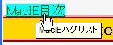

アンカー自体またはアンカーを含む要素を固定配置ボックス（position: fixed;）にすると、:hover擬似クラスや通常のマウスオーバー効果（マウスポインタの変化、ツールチップ(title属性)の表示、ステータスバーへのリンク先URI表示）が消失する。また、MacIE5.0ではマウスクリックでリンクをたどることができなくなる場合がある（補足参照）。
<style type="text/css">
a:hover {
background: aqua;
}
</style>
<div style="position:fixed; left:5px; top:5px;">
<a href="../macie.html" title="MacIEバグリスト">MacIE目次</a>
</div>
アンカーにマウスポインタ等を乗せて:hover擬似クラスなどの効果が現れるか確認してください。
N7.02での表示（標準モード）
MacIE5.0ではマウス操作でリンクをたどることが困難になる場合があります。この現象はMacIE5.1以降では発生しません。
詳しくは飛べない fixedを参照してください。
MacIE5.0以降で不具合の発生が確認されています。